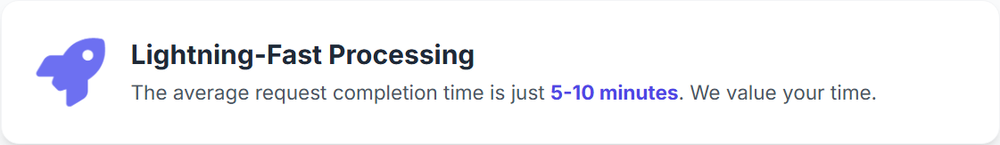

.png)
SpiritSwap is a Fantom-native decentralized exchange that combines fast swaps, deep liquidity, staking, and yield farming with a powerful V3 engine. This guide explains how to use SpiritSwap effectively, how fees work, and which features matter most for traders and liquidity providers in 2025.
Core Ways to Use SpiritSwap
SpiritSwap is built for both active traders and long-term DeFi users. Whether you’re swapping, providing liquidity, or staking SPIRIT for inSPIRIT boosts, the platform’s V3 architecture helps you optimize execution and yield.
What is Yield Farming on SpiritSwap?
Yield farming lets you deposit LP tokens into farms to earn SPIRIT. Locking SPIRIT mints inSPIRIT, which boosts your farm rewards and gives governance rights. With V3, concentrated liquidity allows you to target price ranges for improved capital efficiency.
Choosing the Right SpiritSwap Flow
Select your flow based on your goals. Traders may prioritize low-slippage routes, while LPs and stakers focus on APYs and inSPIRIT boosts. Below is a quick comparison of common approaches.
Comparing Different Options on/around SpiritSwap
| Platform Type | Best For | Key Features | Considerations |
|---|---|---|---|
| SpiritSwap (Native DEX) | Fantom trading & yield | V3 concentrated liquidity, dynamic fees, staking (SPIRIT → inSPIRIT), boosted farms | Requires active management of LP ranges for best results. |
| Other Fantom DEXs | Diversification | Alternative pools, sometimes different fee tiers | May lack inSPIRIT boosts or SpiritSwap’s routing depth. |
| Aggregators | Route discovery | Finds multi-hop paths across pools | Extra hops can add gas; not all features (staking) supported. |
| CEX On/Off-Ramps | Fiat access | Bank transfers, card purchases | Centralized; you’ll bridge back to Fantom for SpiritSwap usage. |
Understanding Fees on SpiritSwap
SpiritSwap uses dynamic fee tiers at the pool level in V3. Traders see the estimated fee and slippage in the UI before confirming. LPs earn a share of trading fees proportional to their active liquidity in the chosen range.
Key Fees to Watch on SpiritSwap
- Trading/Dynamic Pool Fees: Vary by pair and volatility; displayed in the app during a swap.
- Network (Gas) Fees: Fantom gas costs are typically low; still visible in your wallet prior to confirmation.
- Opportunity Costs: For LPs, inactive ranges don’t earn fees; rebalancing incurs gas and potential slippage.
Typical Fee Structures & Considerations (2025)
| Fee Type | Average Range | Notes |
|---|---|---|
| Dynamic Pool Fee | Varies by pair | Lower on stable pairs; higher on volatile assets to reward LPs. |
| Swap Slippage | User-defined | Shown in-app; advanced routing aims to minimize it. |
| Fantom Gas | Very low | Usually negligible vs. trade size; visible in wallet. |
| LP Rebalance Cost | Gas-dependent | Adjusting V3 ranges costs gas; batch changes when possible. |
Best Practices: Security & Risk Management
DeFi is self-custodial: double-check contract addresses, keep wallets secure, and monitor approvals. For LPs, assess impermanent loss risk and use conservative ranges on volatile assets. Stakers should choose lock durations that match their strategy to maximize inSPIRIT benefits without sacrificing flexibility.
How to Farm & Stake on SpiritSwap Safely
Enable 2FA on connected services (where applicable), verify pool contracts from official links, and start with smaller positions before scaling. Track positions regularly and avoid illiquid pairs unless you fully understand the risks.
Compliance Notes
Trading on SpiritSwap is on-chain and non-custodial. Tax treatment varies by jurisdiction; many regions treat crypto disposals as taxable events. Maintain accurate records of swaps, LP deposits/withdrawals, and staking rewards for reporting.
Authoritative & Trustworthy Resources
Review official documentation and reputable analytics to validate routes, liquidity, and rewards. These sources support research-driven DeFi participation.
- SpiritSwap Docs — Official documentation for swaps, LP, staking (SPIRIT → inSPIRIT), and V3.
- DefiLlama: SpiritSwap — TVL and pool metrics for SpiritSwap on Fantom.
- Fantom Foundation Blog — Network updates and ecosystem insights.
- CoinGecko: SPIRIT — Token stats, markets, and historical data.
Frequently Asked Questions (FAQ)
What is SpiritSwap?
SpiritSwap is a Fantom-native DEX supporting token swaps, liquidity provision, yield farming, and staking with a V3 engine for concentrated liquidity and dynamic fees.
How do I start on SpiritSwap?
Visit the official app at spirit-swap.com, connect a Fantom-ready wallet, select Swap/Liquidity/Stake, and follow the in-app prompts.
What is inSPIRIT and why lock SPIRIT?
inSPIRIT is a vote-escrowed representation of locked SPIRIT. Locking can boost farming APYs, grant governance rights, and unlock premium yield opportunities.
Does SpiritSwap support cross-chain swaps?
Yes. Integrations allow optimized routes across multiple networks so you can bridge and trade assets beyond Fantom with minimal friction.
How do fees work on SpiritSwap V3?
Fees are dynamic per pool and vary with volatility. Traders see estimated fees/slippage pre-trade; LPs earn a share of fees based on active liquidity ranges.
What are the risks for LPs?
Impermanent loss, inactive ranges (no fees when the price leaves your band), and gas costs to rebalance. Start conservatively and monitor positions.
Is SpiritSwap audited?
Yes. SpiritSwap contracts are open-source and audited. Still, always use official links and practice robust wallet security.
Where can I track TVL and pool data?
Use DefiLlama for TVL and pool stats and CoinGecko (SPIRIT) for token data.
Can beginners use SpiritSwap?
Absolutely. The interface is intuitive, with clear pre-trade estimates and simple flows for swaps, LP, and staking.
Where do I learn more?
Read the official docs and follow Fantom’s ecosystem updates via the Fantom Foundation blog.